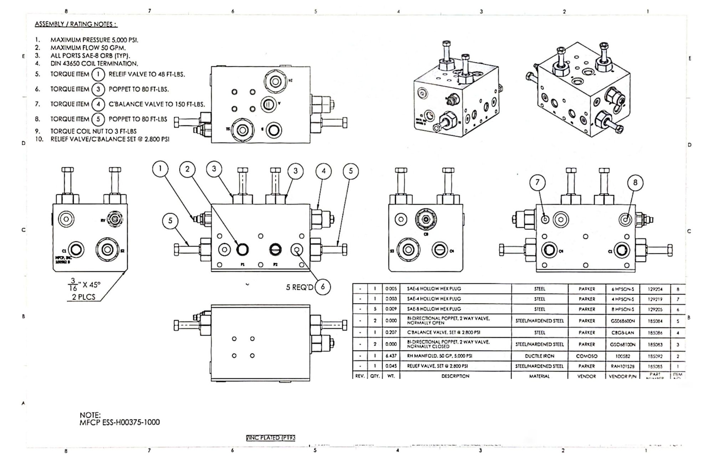

The Challenge
A part may look complete in a CAD model, but it still needs to be communicated clearly before someone can manufacture or assemble it. Dimensions, tolerances, materials, part relationships, and fabrication details all need to be easy to understand.
This collection includes drawings I created for shop production, fixture design, reverse engineering, and assembly work. Each drawing had a different purpose, but the goal was always the same: give the person building or reviewing the part the information they actually needed.
Featured Drawings
Welding Fixture Design
Parts can shift or distort during welding if they are not held in the correct position. I designed custom welding fixtures in SolidWorks that would hold multiple components in precise alignment during assembly. I applied design-for-manufacturability principles to ensure the fixtures were durable but also lightweight and easy for welders to use.
The drawing set communicates the individual parts, dimensions, and assembly needed to manufacture and use the fixture in the shop.


Spray Nozzle Reverse Engineering
The original component did not begin with an existing CAD model or drawing. I measured the physical part, recreated its geometry, and produced a drawing that could be used for documentation and future manufacturing reference.
This required deciding which dimensions controlled the shape and function of the nozzle rather than simply recording every measurement.

Wire Harness Assembly
Wire harness documentation needs to show how several components connect without making the page difficult to follow. I created this assembly drawing to organize the components, identify their relationships, and support consistent installation.

Valve Assembly
This drawing explains how the valve components fit and work together as an assembly. I focused on showing the part relationships and the details needed for production, assembly, and future reference.

Designing for the Shop
Creating these drawings taught me to think beyond whether a model looked correct on the screen. I also had to consider how the part would be measured, fabricated, assembled, and inspected.
A drawing with too little information leaves room for guessing, while one with too much information can become difficult to read. The challenge was deciding what mattered most and presenting it clearly.
What I Learned
The biggest lesson from this work was that drafting is not only about placing dimensions on a page. A good drawing should answer the questions someone is likely to have before they need to ask them.
Working with manufacturing and assembly drawings also helped me understand how design decisions affect the people responsible for building the final product. Clear documentation saves time, reduces mistakes, and keeps the design connected to what can actually be produced.